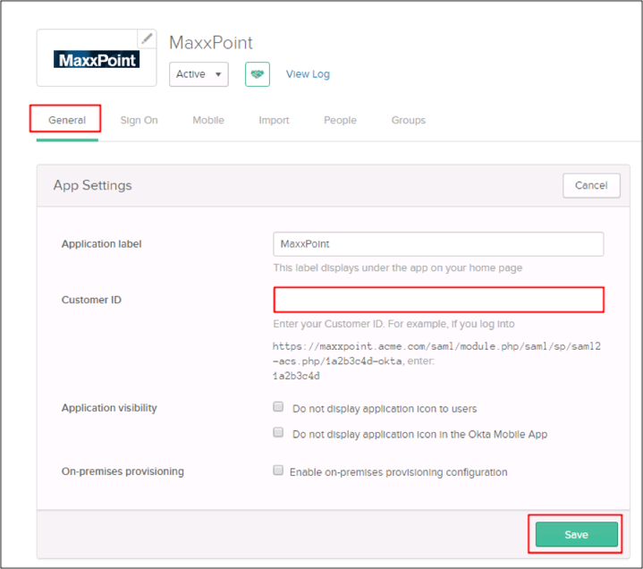
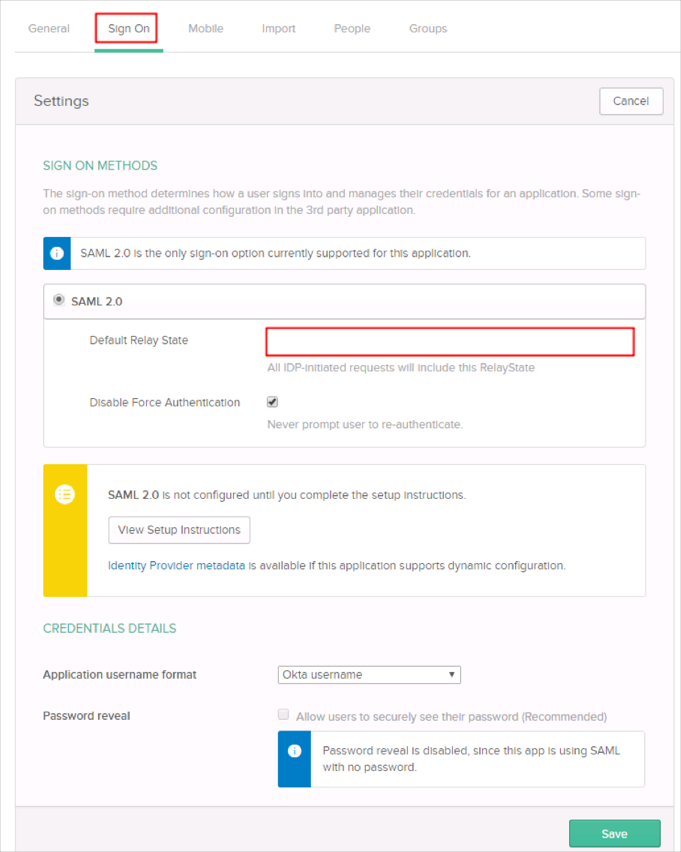
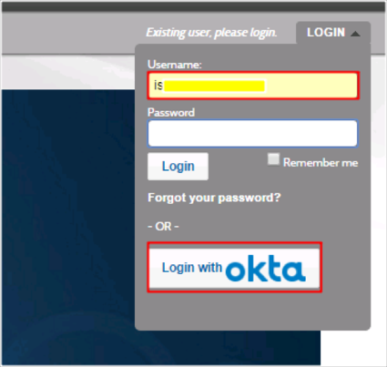

Contact the Maxxpoint Support team and request that they enable SAML 2.0 for your account.
Include the following IDP Metadata URL with your request:
Sign into the Okta Admin dashboard to generate this value.
The Maxxpoint Support team will process your request and provide you with their metadata URL in the following format:
https://maxxpoint.westipc.com/saml/module.php/saml/sp/saml2-acs.php/[customerId]-okta
In Okta, select the General tab for the Maxxpoint app, then click Edit.
Enter the [customerId] provided to you by Maxxpoint into the Customer ID field:
Click Save.

Still in Okta, click the Sign On tab.
Click Edit.
Enter https://maxxpoint.westipc.com/default/sso/login/entity/[customerId]-okta into the Default Relay State field.
Click Save:

Done!
Notes:
SP-initiated flows and IDP-initiated flows are supported.
Just In Time (JIT) provisioning is not supported.
Go to: https://maxxpoint.westipc.com.
Enter your email address in the Username field.
Tab or click out of the Username field and the Login with Okta button will appear.
Click Login with okta:
